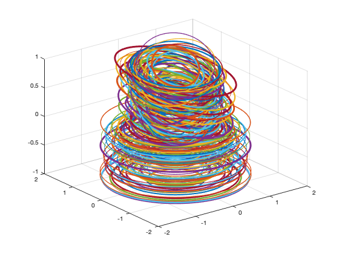

Contents
Create ellipses to train and test the deep learning algorithm
The ellipse images are saved as jpegs in the folder Ellipses. See also GenerateEllipses
% Parameters nEllipses = 100; nCircles = 100; nBits = 32; maxAngle = pi/4; rangeA = [0.5 1]; rangeB = [1 2]; maxThick = 3.0; disp('Generate the ellipses...') tic [s, t] = GenerateEllipses(rangeA,rangeB,maxAngle,maxThick,nEllipses,nCircles,nBits); toc disp('Save the ellipse images...') thisDir = fileparts(mfilename('fullpath')); cd0 = cd; cd(thisDir) cd Ellipses kAdd = 10^ceil(log10(nEllipses+nCircles)); % to make a serial number for k = 1:length(s) imwrite(s{k,2},sprintf('Ellipse%d.jpg',k+kAdd)); end disp('Finished.') % Save the labels save('Type','t'); cd(cd0)
Generate the ellipses... Elapsed time is 94.798193 seconds. Save the ellipse images... Finished.
Copyright
Copyright (c) 2019 Princeton Satellite Systems, Inc. All rights reserved.